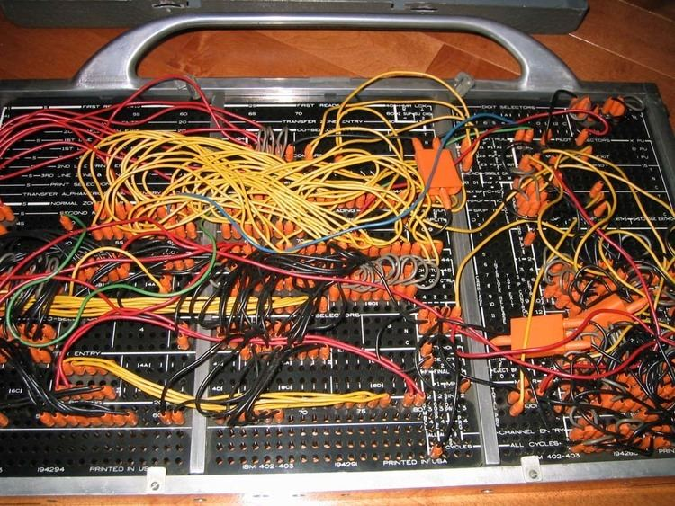
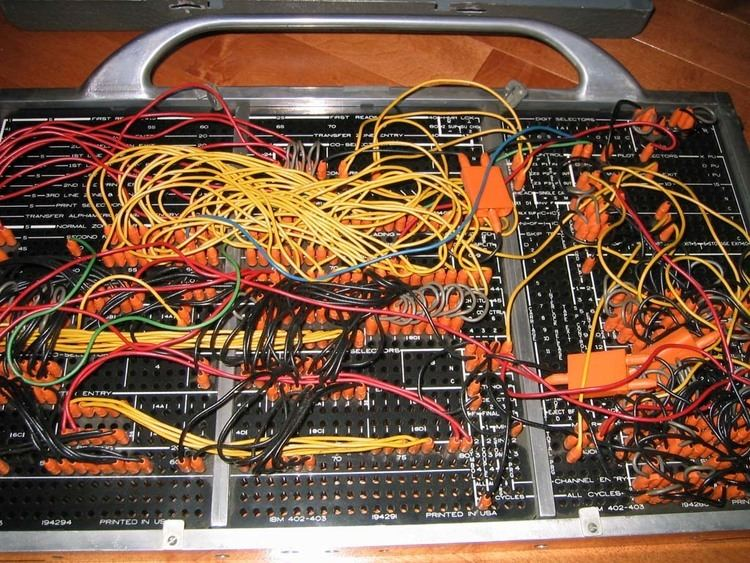

Computer Programming
End
Coding is the composition of sequences of instructions, called programs , that computers can follow to perform tasks. It involves designing and implementing algorithms, step-by-step specifications of procedures, by writing code in one or more programming languages. Programmers typically use high-level programming languages that are more easily intelligible to human than machine code, which is directly executed by the central processing unit. Proficient programming usually requires expertise in several different subjects, including knowledge of the application domain, details of programming languages and generic code libraries, specialized algorithms, and formal logic. Auxiliary tasks accompanying and related to programming include analyzing requirements, testing, debugging (investigating and fixing problems) , implementation of build systems, and management of derived artifacts, such as programs' machine code.
While these are sometimes considered programming, often the term software development is used for this larger overall process with the terms programming, implementation, and coding reserved for the writing and editing of code per se. Sometimes software development is known as software engineering, especially when it employs formal methods or follows an engineering design process.
 

The first computer program is generally dated to 1843, when mathematician Ada Lovelace published an algorithm to calculate a sequence of Bernoulli numbers, intended to be carried out by Charles Babbage's Analytical Engine. However, Charles Babbage had already written his first program for the Analytical Engine in 1837
In the 1880s, Herman Hollerith invented the concept of storing data in machine-readable form. Later a control panel (plug board) added to his 1906 Type I Tabulator allowed it to be programmed for different jobs, and by the late 1940s, unit record equipment such as the IBM 602 and IBM 604, were programmed by control panels in a similar way, as were the first electronic computers. However, with the concept of the stored-program computer introduced in 1949, both programs and data were stored and manipulated in the same way in computer memory.
PROGRAMMING IS EVERYWHERE
Programming is the process of writing a computer program that accomplishes a specific task. It involves writing instructions for a computer to follow, which are stored in a programming language. Programming languages are designed to be easy for humans to read and write, making them a convenient way to communicate with computers.